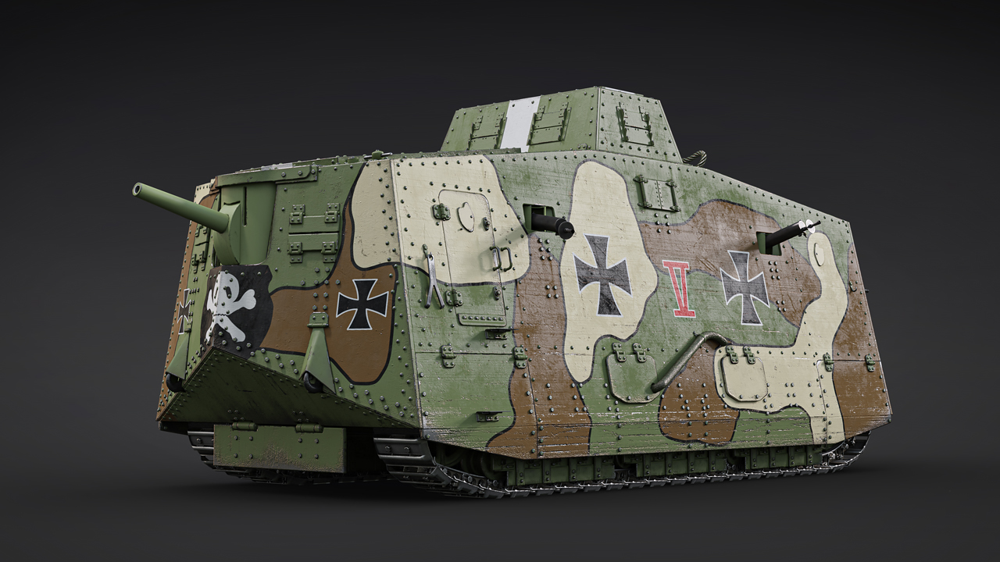
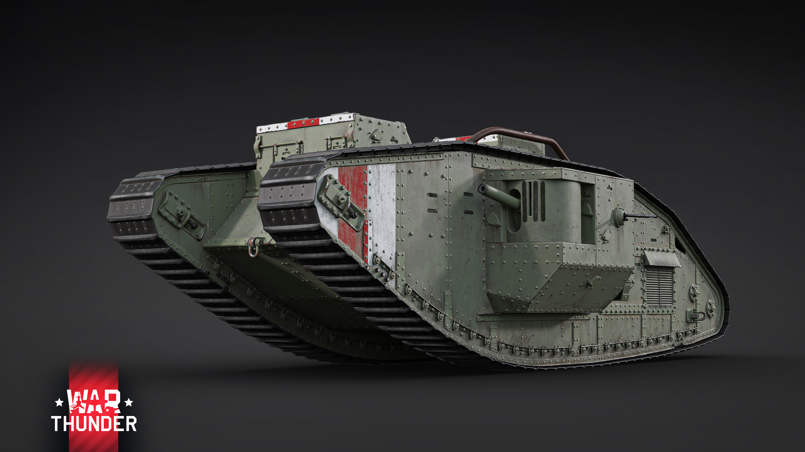
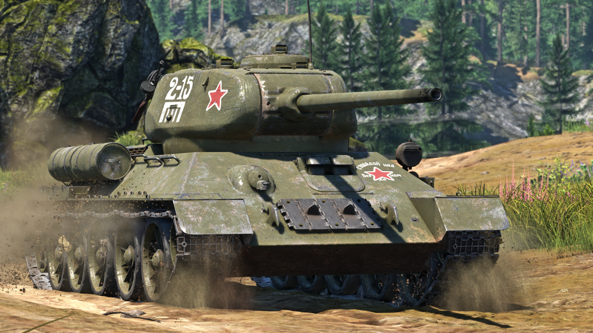
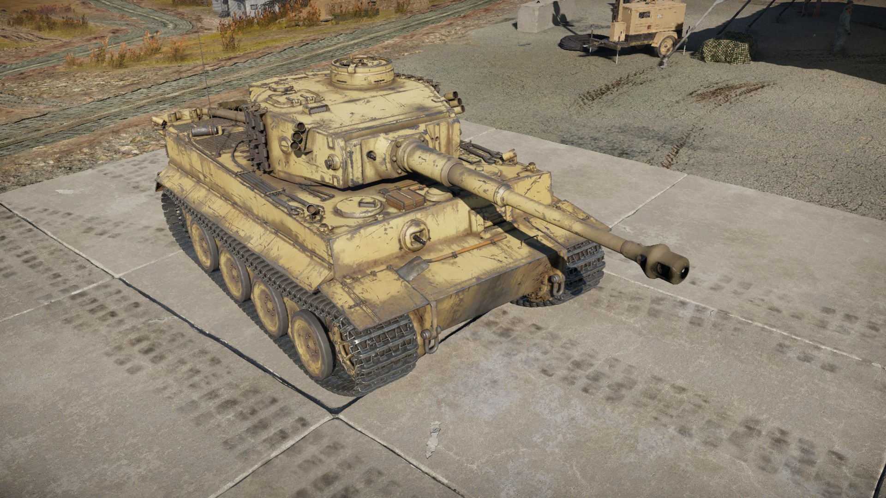
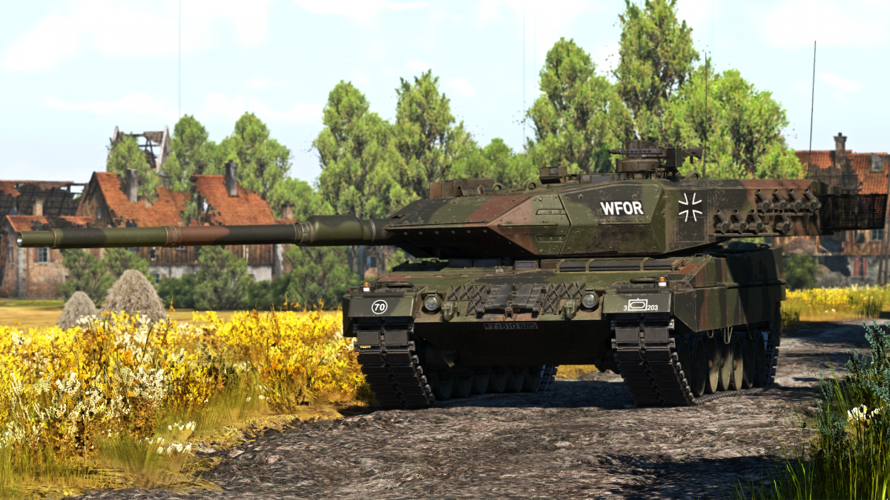
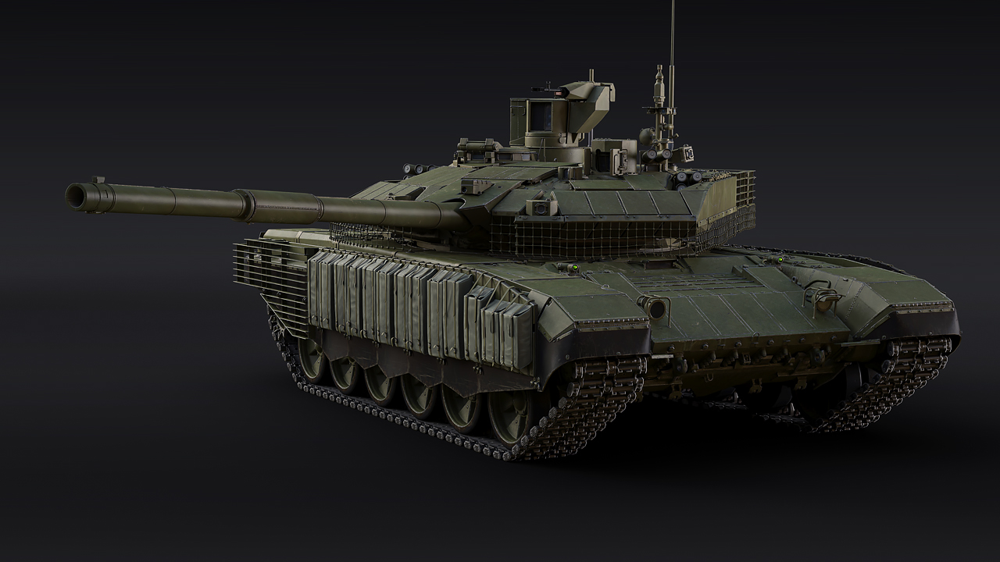
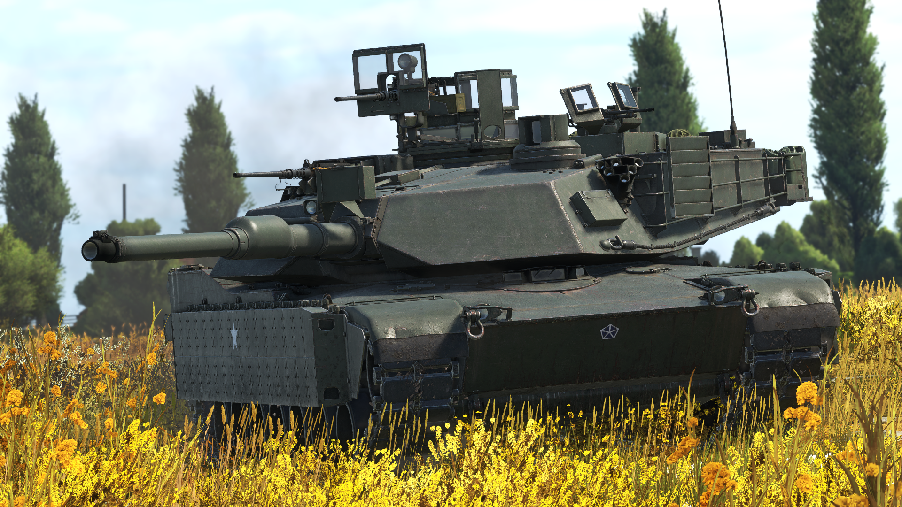

Un carro de combate, tanque, o simplemente carro, es un vehículo blindado de combate con tracción de orugas o ruedas, diseñado principalmente para enfrentarse a fuerzas enemigas utilizando fuego directo. Un carro de combate se caracteriza por tener armas de alto poder de fuego, un blindaje pesado, así como por un alto grado de movilidad que le permite cruzar terrenos difíciles a velocidades relativamente altas. Aunque los carros de combate son caros y requieren de logística, son una de las armas más temibles y versátiles del campo de batalla moderno, tanto por su capacidad de atacar a objetivos terrestres como por su valor al causar pánico en la infantería enemiga. El efecto psicológico sobre los soldados enemigos por la presencia del carro de combate en el campo de batalla es denominado acción de choque. Los carros de combate son máquinas de ataque con gran potencia, raramente operan en solitario, están organizados en unidades blindadas en fuerzas combinadas. Sin ellos, los carros de combate, a pesar de su blindaje y movilidad, serían vulnerables a la infantería, las minas terrestres y la artillería. Estos vehículos tienen desventajas en bosques y zonas urbanas, que anulan las ventajas de la capacidad de fuego a larga distancia del vehículo, reducen su movilidad y limitan la capacidad de la tripulación para detectar potenciales amenazas. Los carros fueron utilizados por primera vez durante la Primera Guerra Mundial para romper la guerra de trincheras, y su papel evolucionó hasta asumir el puesto de la caballería en el campo de batalla. El carro de combate y las tácticas de blindados han sufrido muchas evoluciones durante casi un siglo. Aunque se siguen desarrollando sistemas de armamento y blindajes, muchas naciones han estado reconsiderando la necesidad de tales armas pesadas en un periodo caracterizado por la guerra no convencional.
El nombre de tanque, tank en inglés, apareció en las fábricas británicas: se engañó a los trabajadores para mantener el secreto militar diciéndoles que estaban construyendo depósitos de agua móviles para el ejército, pero estaban produciendo un vehículo de combate.
Las condiciones de lucha en el frente occidental incitaron al ejército británico a comenzar la investigación de un vehículo autopropulsado que pudiera cruzar trincheras, derribar alambradas y fuera impenetrable al fuego de las ametralladoras. Tras haber visto el Rolls Royce blindado utilizado por la Royal Naval Air Service en 1914, y conocedor de los esquemas para crear un vehículo de combate con tracción de orugas, el Primer Lord del Almirantazgo Winston Churchill patrocinó un comité, el Landships Committee, para supervisar el desarrollo de esta nueva arma. El Landships Committee creó el primer prototipo con éxito, apodado Little Willie, que fue probado por el ejército británico el 6 de septiembre de 1915. Aunque inicialmente se los denominaba buques de tierra (landship), los primeros vehículos fueron llamados coloquialmente transportes de agua y más tarde tanques, para mantenerlos en secreto. La palabra tanque se empleó para dar la impresión a los trabajadores de que estaban construyendo contenedores de agua móviles para el ejército inglés en Mesopotamia, y tomó carácter oficial el 24 de diciembre de 1915. El primer caso de carro operativo aconteció cuando el capitán H. W. Mortimore llevó un Mark I al combate durante la batalla del Somme, el 15 de septiembre de 1916. Los franceses desarrollaron el Schneider CA1 que se utilizó por primera vez el 16 de abril de 1917 que, después de los malos resultados demostrados, fue sustituido paulatinamente por el Renault FT. Este último instituyó el que sería el formato estándar de un carro: una base blindada con tracción de orugas y una torreta giratoria que lleva instalado el armamento principal.La primera vez que se emplearon carros masivamente durante un combate fue en la batalla de Cambrai, el 20 de noviembre de 1917. El carro de combate dejaría finalmente la guerra de trincheras obsoleta, y los miles de carros que utilizaron en la guerra las fuerzas británicas y francesas realizaron una contribución significativa. Los resultados iniciales con los carros fueron variados: los problemas de fiabilidad (y la impaciencia del alto mando) causaban un desgaste considerable en combate. El despliegue en pequeños grupos también disminuyó su valor e impacto táctico. Las fuerzas alemanas sufrieron el choque y carecían de armas contra los carros, aunque descubrieron la munición anticarro y el uso de trincheras más anchas para limitar la movilidad de los carros británicos. La evolución de las condiciones en el campo de batalla y la falta de fiabilidad continuada forzaron a los carros aliados a continuar desarrollándose durante el resto de la guerra, produciendo nuevos modelos como el Mark V, que podía abrirse paso ante obstáculos grandes, especialmente trincheras amplias. Alemania dispuso de una pequeña cantidad de carros, principalmente capturados, durante la Primera Guerra Mundial. Solo llegaron a producir aproximadamente veinte carros de su propio diseño, el Sturmpanzerwagen A7V.
|  |  | ||||
| A7V aleman | Mark V Britanico |
Durante la Segunda Guerra Mundial se dieron avances en el diseño de tanques. Los alemanes inicialmente presentaron a combate tanques poco blindados y con armas ligeras, como el Panzer I, que se había creado con la intención de usarse solo en entrenamientos. Estos tanques ligeros pero rápidos y otros elementos blindados fueron un elemento clave en la guerra relámpago. Durante la guerra todas las fuerzas incrementaron en gran medida la potencia de fuego y el blindaje de sus tanques: el Panzer I solo tenía dos ametralladoras, mientras que el Panzer IV llevaba un cañón de 75 mm y pesaba menos de 20 t. Al final de la guerra, el tanque mediano alemán, el Panther, disponía de un cañón rápido de 75 mm y pesaba 45 t. Otro de los avances durante la guerra fue la mejora de los sistemas de suspensión. La calidad de la suspensión era un determinante principal para el rendimiento del tanque en el campo. Los tanques con suspensión limitada proporcionaban frecuentes sacudidas a la tripulación, limitando la velocidad y haciendo que el disparo en movimiento fuera prácticamente imposible. Los nuevos sistemas, como la barra de torsión y la suspensión Christie, mejoraron el funcionamiento, permitiendo al Panther cruzar terrenos a velocidades que habrían sido difíciles para otros modelos antiguos aún en uso. En ese momento, la mayoría de los carros de combate estaban equipados con radios, lo que mejoraba la coordinación de las unidades. El chasis del carro fue adaptado a un amplio número de necesidades militares, incluyendo la limpieza de minas y tareas de ingenieros. Las principales potencias desarrollaron asimismo armas autopropulsadas específicas: artillería, cazacarros y cañones de asalto. Los cazacarros rusos y alemanes eran más baratos y sencillos que los carros, mientras que los cazacarros británicos y estadounidenses apenas se diferenciaban de los carros de combate. Las torretas, que no eran una característica universal con anterioridad, fueron reconocidas como un elemento correcto. Se estimó que si el cañón del carro de combate debía ser utilizado para enfrentarse a blancos blindados, entonces necesitaba ser grande y de tanto alcance como fuese posible, teniendo un cañón que pudiera disparar a cualquier punto. Los diseños de carros con múltiples torretas, como los soviéticos T-35 y T-28 fueron abandonados durante la Segunda Guerra Mundial. La mayoría de los carros mantuvieron una ametralladora en el casco.
|  |  | ||||
| T-34-85 el tanque sovietico insignia de la urss |
Tiger 1 el tanque pesado aleman de 58 toneladas |
Tras la Segunda Guerra Mundial, el desarrollo del carro de combate continuó con la mejoras de las clases medianas y pesadas. Los tanques ligeros se limitaban a labores de reconocimiento y, en Estados Unidos, como apoyo a fuerzas aerotransportadas. Sin embargo, las limitaciones de peso de los transportes aéreos hacían imposible construir un tanque ligero práctico, y esta clase fue desapareciendo con el paso del tiempo. La combinación de mejores suspensiones y motores permitió a los tanques medios de finales de la guerra superar a los primeros tanques pesados. Con añadir algo más de blindaje y motores algo más grandes para compensar, los carros medios quedaron protegidos contra la mayoría de las armas antitanque, mientras que su movilidad se mantenía. Algunos consideran al Panther como el punto de inflexión y como base para los diseños posteriores. Sin embargo, el Panther no estaba demasiado blindado ni podía luchar contra los tanques pesados en igualdad de condiciones. Se considera generalmente al tanque británico Centurión como el primer tanque de esta nueva generación, pues era capaz de resistir el impacto del famoso cañón 88 mm alemán; estaba armado con el cañón Royal Ordnance L7 de 105 mm, superior a cualquier otro en el campo de batalla, y podía alcanzar los 56 km/h gracias a su motor Meteor de 650 cv. El Centurión reemplazó a todos los tanques medios británicos e impulsó a la desaparición del tanque pesado, convirtiéndose en lo que los británicos llamarían Universal Tank («tanque universal»), que pronto sería conocido como «carro de combate principal» (o Main Battle Tank, MBT). En respuesta a la amenaza de los misiles guiados anticarro, se trasladó el foco de desarrollo del grosor del blindaje a la tecnología del blindaje. La tecnología del cañón se mantuvo similar a las décadas anteriores, con la mayoría de los carros de combate utilizando un sistema de carga manual, pero con grandes avances en la efectividad de la munición. Aunque los papeles y rasgos básicos de los tanques fueron casi todos desarrollados en el final de la Primera Guerra Mundial, las prestaciones de las contrapartidas en el siglo XXI se habían incrementado en un orden de magnitud. Se habían refinado en respuesta a las amenazas siempre cambiantes y los requisitos, especialmente contra otros tanques. Las avanzadas capacidades de los tanques se equilibraron con el desarrollo de otros carros de combate y el continuo desarrollo de armas antitanque.
|  |  |  |
| Leopard 2A6 aleman uno de los mas avanzados |
T-90M El tanque ruso mas moderno en servicio |
M1A2 sep abrams El tanque estadounidense mas moderno |